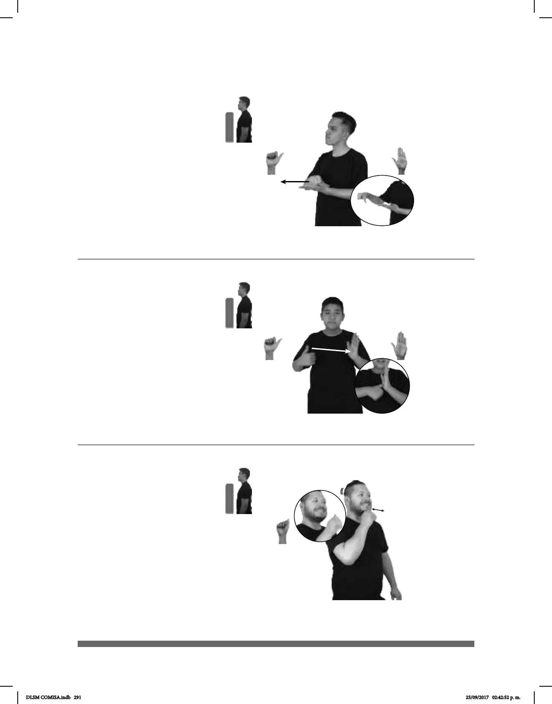

291
Seña: SB
MD A.1, MB
B-P.2
MD palma hacia
abajo. MB palma hacia arriba.
A la altura del pecho.
MD sobre MB.
MD recto hacia el
frente.
v. tr. Detener o diferir
(A-175)
pos-MI NÚMERO TELÉFONO SUSPENDER YA
Seña: SB
MD A.1, MB B-P.2
MD palma hacia adentro.
MB palma hacia la derecha.
MD inicia a la altura del
pecho del lado derecho y termina
sobre MB. MB a la altura del pecho en
el centro.
MD recto.
sust. m. Pequeño
aparato empleado para llamar o avisar
mediante la emisión rápida de sonidos
intermitentes.
(A-176)
pro-TÚ TOCAR-TIMBRE PARA ABRIR-PUERTA
Toca el timbre para que te abran la puerta.
Seña: SM
A.5
Palma hacia la izquierda.
A la altura de la barbilla.
La mano simula varios
saltos.
loc. adv. No concluido
hasta el momento.
(A-177)
________________________neg___
TODAVÍA-NO pro-YO IR ESCUELA
Todavía no voy a la escuela.
DLSM COMISA.indb 291 25/09/2017 02:42:52 p. m.